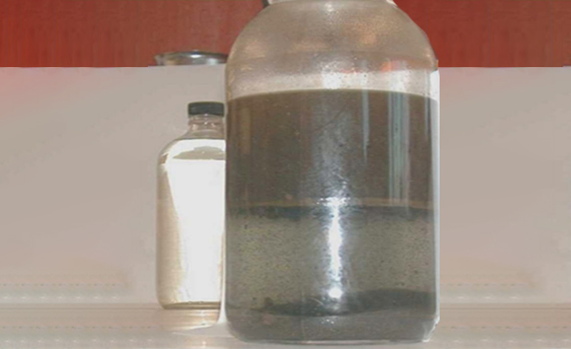
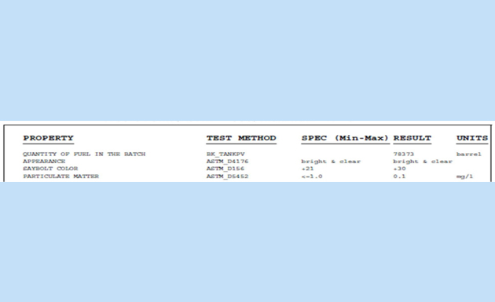
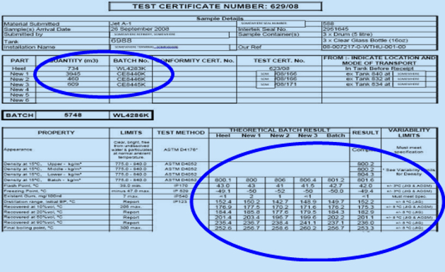
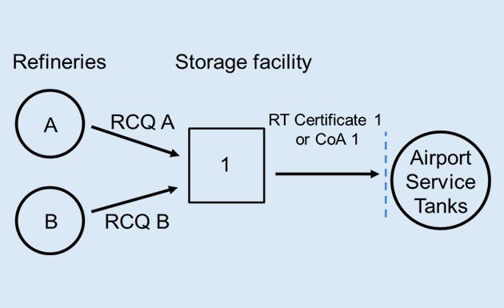
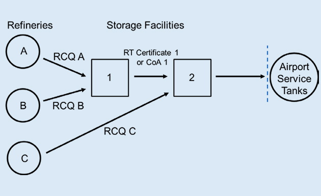
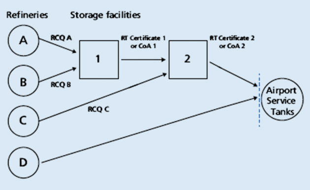
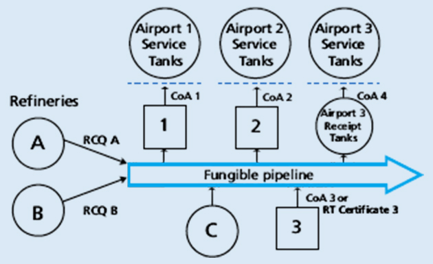

Session 6.4
Quality assurance system
- Refinery Certificate of Quality (RCQ)
- Certificate of Analysis (CoA)
- Release Certificate (RC)
- Recertification Test (RT) (as defined in JIG Standards)
- Appearance Check
- Filter Membrane Testing
- Control Check
- Conductivity
- Microbiological Testing, and
- Chemical Water Detector Test (CWD)
6.4.1 Quality assurance system principles
Quality assurance system principles Aviation fuel quality assurance is based on certification at the point of manufacture and procedures to verify that the quality of the aviation fuel concerned remains within the specification limits and has not changed significantly during distribution and delivery to aircraft. Proper documentation is an essential part of this process. Valid product certificates are:
Other FIELD TESTS are required for Quality Assurance and included as part of the detailed operating procedures include:
6.4.1.1 Typical Distribution System
Every organisation in the supply chain from refinery to airport shall have an effective, documented and auditable aviation fuel quality assurance system.
- Aircraft Sensitivity
- While many aircraft components and systems are designed with significant redundancy (e.g. backup systems, by-pass, etc.), the fuel does not have this safety feature.
- There is no backup fuel supply if the main supply is contaminated or off-specification.
- Product Quality issues
- Having good documentation makes it much easier to detect contamination, particularly with other petroleum products.
- While detecting gross contamination with water or particulate can be achieved with simple Appearance testing, detecting diesel or mogas contamination will require comparing test results included on the certificates. 
- What is the purpose of a Quality Certificate?
- Quality Certificate
- Assigns a unique batch number to the fuel
- Documents the age of the fuel
- Documents quantity of fuel in the batch
- Details all test results, limits and test method
- Details any additives in the fuel
- Ensures test results are within the expected range (recertification only)
- Gives quality assurance for receivers and end users
- A declaration that all aspects of the specification have been met
- An essential element of batch traceability
6.4.1.2 Why do we certify Jet Fuels?
- The RCQ is the definitive original document describing the quality of a batch of aviation fuel.
- RCQ is like a Birth Certificate because it is prepared at the point of manufacture
- RCQ represents a complete certification of a product’s conformance with the relevant specification of all the properties required by the specification to which the fuel is manufactured, including information regarding
- composition of the fuel in terms of the
- percentage of non-hydro processed,
- mildly hydro processed,
- everely hydro processed and synthetic components,
- details of the addition of additives and includes,
- type of additive and
- amount of additive
- always dated
- igned by an authorised signatory
- Specification name, issue, and any amendment number.
- Name and address of testing laboratory, including contact details.
- Batch number or unique identifier.
- Tank number.
- Quantity of fuel in the batch.
- Properties tested include specification limit, test method, and test result.
- Name and position of authorised test certificate signatory or electronic signature.
- Date of certification.
- Test Results
- There are several required pieces of information that must accompany the test results, which include:
- Specification being tested against (e.g. Def Stan 91-91 or ASTM D1655)
- Issue of the Specification (e.g. Def Stan 91-091 Issue 9)
- Test Name and Method
- Flash Point (IP 170 or ASTM D56)
- MSEP (ASTM D3948)
- Specification Limits and Units
- Flash Point (IP 170) Minimum 38 °C
- Freeze Point (ASTM D2386) Maximum -47 °C 
- Standard/Specification name, issue and any amendment number
- Name and address of the testing laboratory
- Batch Number or unique identifier
- Tank Number
- Quantity of fuel in the batch
- Properties tested, including specification limit, test method and result of the test
- Additives, including qualification reference and quantity added
- Name and position of authorised test certificate signatory or electronic signature
- Date of certification
6.4.2 Refinery Certificate of Quality
RCQ is like a Birth Certificate because it is prepared at the point of manufacture
RCQ is the fuel’s Birth Certificate
There is only ONE
In addition to the information about ahaveviation fuel specifications, RCQ must
As per Def Stan 91-091, Annex D, the minimum information required on an RCQ or CoQ is
6.4.2 Refinery Certificate of Quality
Please identify the minimum information required as per Annex D of Def Stan 91-091 on the following RCQ
- The Certificate of Analysis (COA) is a document produced downstream of the refinery in intermediate storage terminal or intermediate storage locations to demonstrate that a batch of fuel meets the specification requirements
- CoA is issued by independent inspectors and/or lab and contains the results of measurements made of all the properties included in the primary Specification or Checklist. i.e. It is a Full-Test
- Details of Test types, Max./Min should be included as for RCoQ
- Indicating compliance with those parameters included in the main table of the specifications
- CoA cannot include details of the additives added previously
- Laboratories testing product to produce a COA will not know the refinery processing conditions, or the types and quantities of additives used
- Def Stan specifications require COAs to maintain traceability of component batches
- However, COAs may lose traceability in large fungible transport systems
- It shall always be dated and signed by an authorised signatory
6.4.3 Certificate of Analysis (CoA)
COA is the fuel’s Visa, which enables it to pass to the next step in the supply chain
A CoA cannot be treated as a RCQ or CoA cannot replace RCQ.
- Recertification Test is a powerful tool for detecting contaminants like diesel or gasoline during distribution
- RT is normally used when aviation fuels are transferred in multiproduct system where there could be a possibility of cross-contamination (e.g. marine tanker or multi-product pipeline)
- RT is carried out to verify that the quality of the aviation fuel concerned has not changed during distribution and remains within the specification limits
- RT Certificate shall be dated and signed by an authorised representative of the laboratory carrying out the testing
- reference to the batch number or other unique identifiers (e.g. tank number, date and time);
- test report number (last full certification (RCQ or CoA or RT Certificate on this batch);
- date and time of release;
- certified batch density;
- quantity of fuel;
- statement that the product complies fully with the visual appearance requirement (and conductivity and temperature if SDA is present) and is free from bulk water (based on a tank sump sample);
- grade of fuel and specification, and
- authorised signatory confirming the requirements of the standard have been met
- Recertification Test Certificate (RT) is replaced by Certificate of Analysis (CoA) when multiple fuel batches (e.g. more than three (3) new batches on top of the tank heel) have been received into a common tank, often in a non-dedicated supply system
- This is because a simple Recertification Test may not be sufficient as some fuel properties do not easily ‘AVERAGE’or ‘BLEND LINEARLY’ across multiple batches
- In this case, a COA will ensure that all fuel properties are on-specification and the fuel is fit for the purpose
- RT comprises a reduced set of tests (compared with the full set in the RCQ or CoA) which are particularly sensitive to contamination.
- Property
- Appearance
- Corrosion, Cu Strip, 2 Hrs
- Density or Specific Gravity
- Distillation
- Existent Gum
- MSEP (WSIM)
- Flash Point
- Freezing Point
- Conductivity
- RT not only checks that the parameters meet the limits defined by the Standard/Specification but also that they have not changed significantly from the initial values
- Test result is compared to theoretical result and must be within variability limits as well as in the specification
- The Appearance and Saybolt tests allow for easy identification of free water/particulate or bulk cross-contamination
- Recertification (RT) is required because testing Density alone may not be sufficient to allow for the identification of product cross-contamination
- If a product is contaminated with :
- The laboratory tests against pre-defined test parameters, which will indicate contamination when results are compared against the RCQ
- Guidelines for jointly operated systems (JIG 2) contain industry-agreed recertification test requirements
- A laboratory is only competent to issue a test certificate and NOT RELEASE CLEARANCE unless on-site and performed/ observed by lab staff
- Results within spec limits alone are not deemed acceptable
- They shall also be within defined variability limits of the original RCQ/ COA / prior RTs
- Account shall be taken of the mixing of batches when comparing test results
- The laboratory may give clearance if they have complete batch information and copies of previous test certificates; otherwise, this must be done by the product custodian
- If more than three new batches are blended, then a full test should be done, i.e. CoA
- Layered tanks require special handling and additional testing before release
- the specification limits are met, and
- no significant change is noted for each property on the test certificate
- Specification name, issue and any amendment number.
- Name and address of testing laboratory, including contact details.
- Batch number or unique identifier.
- Tank number.
- Volume of each originating batch that comprises the resulting new batch.
- Properties tested, including specification limit, test method and test result, including comparison checks
- Name and position of authorised test certificate signatory or electronic signature.
- Date of certification
6.4.4 Recertification Test Certification - RT
RC is the FINAL PRODUCT QUALITY DOCUMENT as it authorises any transfer movement of aviation fuel or any release of the tank (including to airports) RC includes:
Note:
Because not all fuel properties blend LINEARLY, it is crucial to recognise that the results of the COA may be outside the VARIABILITY LIMITS allowed for fuel Recertification. Still, if the result is on specification, then it will likely be fit for purpose.
.png)
 (1).png)
The results of all Recertification Tests shall be checked to confirm that:
The minimum information that shall be included on the RT Certificate is:
What Information should be there on a RT
- reference to the batch number or other unique identifiers (e.g. tank number, date and time);
- test report number (last full certification (RCQ or CoA or RT Certificate on this batch);
- date and time of release;
- certified batch density;
- quantity of fuel;
- statement that the product complies fully with the visual appearance requirement (and conductivity and temperature if SDA is present) and is free from bulk water (based on a tank sump sample);
- grade of fuel and specification, and
- authorised signatory confirming the requirements of the standard have been met
- These checks must be done by on-site personnel.
- A laboratory cannot issue a RC unless the lab personnel conduct the release checks
6.4.5 Release Certificate (RC)
RC is the FINAL PRODUCT QUALITY DOCUMENT as it authorises any transfer movement of aviation fuel or any release of the tank (including to airports) RC includes:
The RC is an operational document issued by the operator of the site handling/transferring the product linked to one or more laboratory test certificates.
- Location 1 needs to have RCQ A and RCQ B in its possession and to verify that they meet the specification requirements.
- Location 1 receives batches from refineries A and B via multiproduct (non-dedicated) supply systems
- At Location 1 the commingled product is rebatched and RT Certificate 1 or CoA 1 produced.
- RT Certificate 1 or CoA 1 must list RCQ A and RCQ B by their batch number or other unique identifier including batch make up (volumes)
- Copies of RCQ A and RCQ B do not need to be attached to RT Certificate 1 or CoA 1 when supplied to the Airport
- Location 2 receives product from storage Location 1 and also from refinery C via multiproduct (non-dedicated) supply systems
- Location 2 needs to have RT Certificate 1 or CoA 1 and RCQ C in its possession, to verify that they meet the requirements of the specification
- At Location 2 the commingled product is rebatched and RT Certificate 2 or CoA 2 is produced.
- Location 2 needs to have RT Certificate 1 or CoA 1 and RCQ C in its possession, to verify that they meet the requirements of the specification and list them by their batch number or other unique identifier on RT Certificate 2 or CoA 2.
- RCQ C and RT Certificate 1 or CoA 1 do not need to be attached to RT Certificate 2 when supplied to the Airport
- In addition to scenario 2 the Airport receives product from refinery D via dedicated supply systems.
- In addition to RT Certificate 2 or CoA 2 the Airport shall receive RCQ D
- FUNGIBLE PIPELINE receives aviation fuel from refineries A, B, and C and terminal D
- Fuel is commingled and individual batch TRACEABILITY IS LOST
- In this situation RT (Recertification Testing) is not effective and CoA testing is required at Location 1 and 2 before the aviation fuel can be delivered into airport service tanks at either Airport 1 or Airport 2
- At Airport 3 CoA testing is required of the AIRPORT RECEIPT TANKS before transferring the fuel into the AIRPORT SERVICE TANKS
6.4.6 Scenarios
Scenario 1
Scenario 2
Scenario 3
Scenario 4
In fungible pipeline systems, traceability and documentation of specific batches cannot be maintained because batches are added and subtracted during transportation along the pipeline.
Interactive Game
Identify which certificates are required across a typical Jet Fuel distribution system
RCQ= Refinery Certificate of Quality COA = Certificate of Analysis RT = Recertification Certificate RC = Release Certificate
- Any movement of aviation fuel shall be supported by an RCQ, CoA or RT Certificate that is LESS THAN 180 DAYS OLD.
- If the latest test certificate (RCQ, CoA or RT) for a batch of product is more than 180 days old, a CoA test shall be conducted on the batch of fuel
- A comparison of the new CoA shall be made with the original RCQ/CoA/RT on entry to storage (or into packaging).
- Any significant differences shall be investigated before release to confirm that the product is fit for use.
6.4.7 Certificate Validity
Note: Drum stocks are exempt from this requirement; here, the certification is valid for 12 months from the filing date or the last retest date for the batch of drums. Suppose there have been changes to the fuel specification since the date on the test certificate. In that case, any additional testing required shall be conducted following the current specification when retesting.